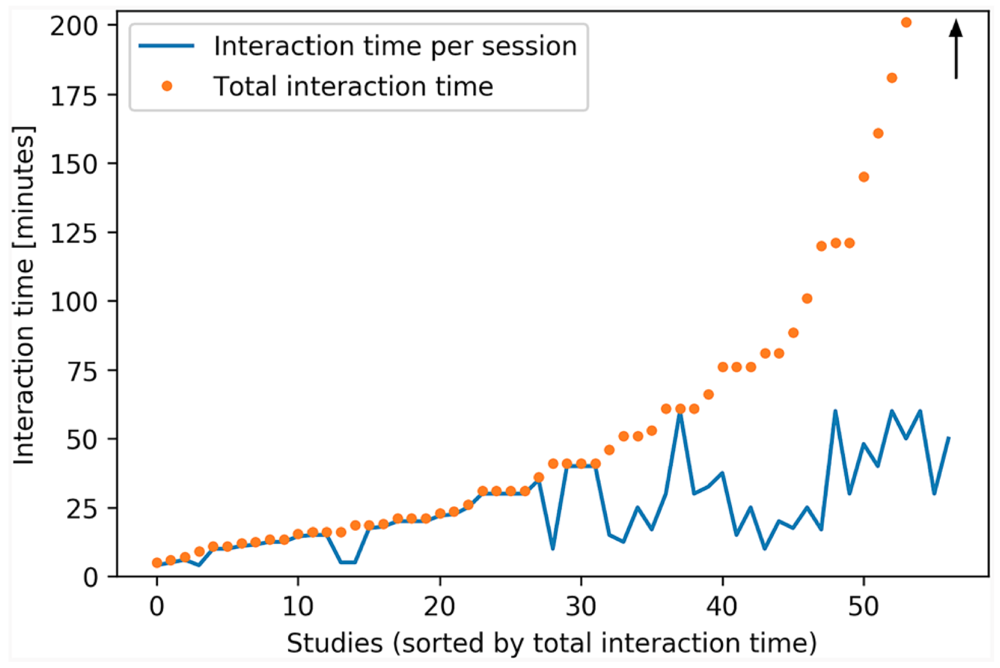
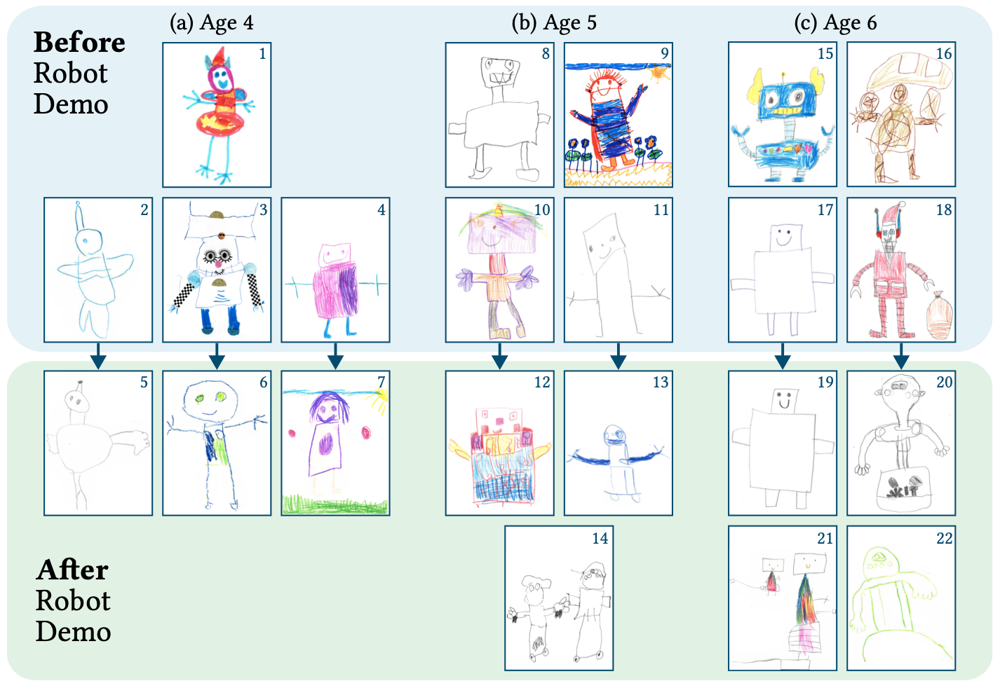
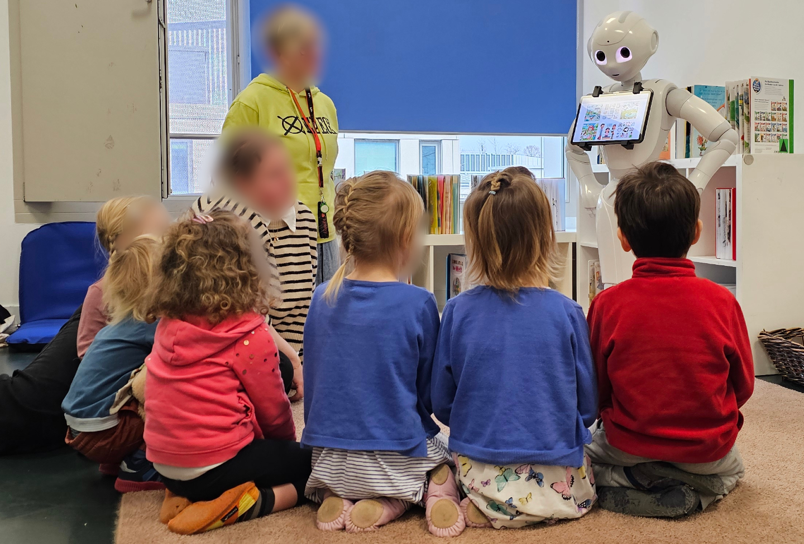
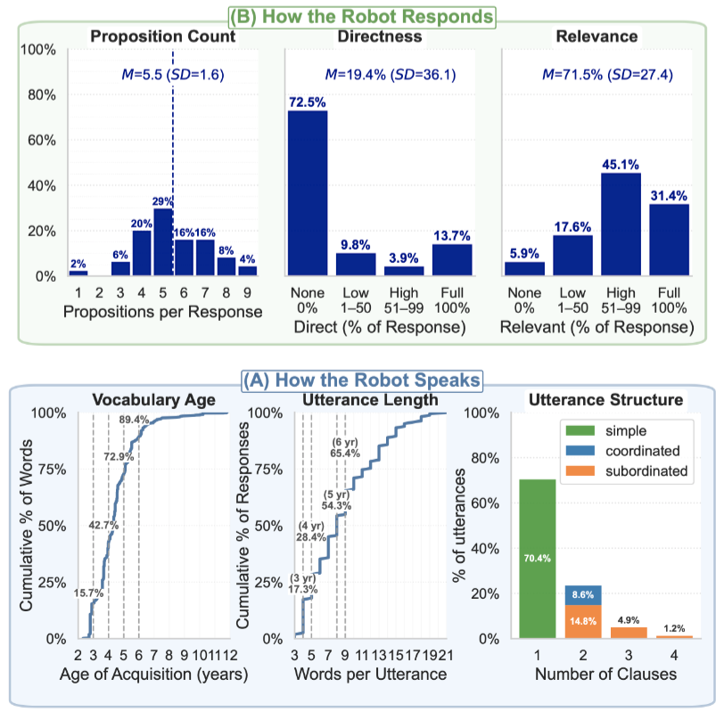

Irina Rudenko, Ph.D.
Child Psychologist
Researcher at the Karlsruhe Institute of Technology (KIT)
Child Psychologist
Researcher at the Karlsruhe Institute of Technology (KIT)
Interdisciplinary research at the intersection of assistive robotics and child psychology, aimed at developing novel robotic methods to support children’s learning and development.
I am a researcher at the Institute for Anthropomatics and Robotics, Karlsruhe Institute of Technology (KIT), working on the interdisciplinary crossroads of assistive robotics and child psychlogy. I earned my Ph.D. in psychology at the Moscow State University, researching interpersonal interaction styles and their determinants. In the following years I worked in academia on various psychology problems, wrote for a popular psychology journal on topics related to children, parents and education, worked with children in rehabilitation and development centers, and in a private school as a school psychologist. Furthermore, I have several years of corporate experience in Human Resources, in career development and education guidence, and in private consulting.
In 2024, I joined the Socially Assistive Robotics with Artificial Intelligence (SARAI) Lab, led by Barbara Bruno, where I work on developing novel assistive robotics methods to support children’s learning and development. My research adopts a child-centred approach and focuses on ensuring age- and developmentally appropriate design of Child–Robot Interaction (CRI). I investigate how insights from child development can enrich the understanding of children’s needs and help design and match the robot’s capabilities to them. I argue that this would make interactions more efficient, sustainable, and enjoyable, thus advancing towards the ultimate goal of CRI.
My complete background is available here: cv

Irina Rudenko, Andrey Rudenko, Achim J. Lilienthal, Kai O. Arras, Barbara Bruno, "The Child Factor in Child-Robot Interaction: Discovering the Impact of Developmental Stage and Individual Characteristics", International Journal of Social Robotics (IJSR), 2024 [paper]

Irina Rudenko, Utku Norman, Romain Maure, Andrey Rudenko, Nora Weinberger, Franziska Krebs, Fabian Peller-Konrad, Fabian Reister, Tamim Asfour, Barbara Bruno, "Drawings for Insight on Preschoolers' Perception of Robots", Late-breaking Report, ACM/IEEE International Conference on Human-Robot Interaction (HRI), 2024 [paper] [video]

Jasmin Azarfar, Utku Norman, Irina Rudenko, Barbara Bruno, "Designing Robot-Mediated Phonological Awareness Activities: Child-Centered Approach and Kindergarten Integration", IEEE International Conference on Robot and Human Interactive Communication (RO-MAN), 2025 [paper]

Irina Rudenko, Utku Norman, Lukas Hilgert, Jan Niehues, Barbara Bruno, "Towards a Child-Appropriate LLM for Child–Robot Conversation", Late-breaking Report, ACM/IEEE International Conference on Human-Robot Interaction (HRI), 2026
Irina Rudenko
Karlsruhe Institute of Technology (KIT)
Socially Assistive Robotics with Artificial Intelligence Lab (SARAI)
Adenauerring 12
Building 50.19, room 505
76131 Karlsruhe
You can reach me via e-mail: irina.rudenko at kit.edu
I speak English, German and Russian